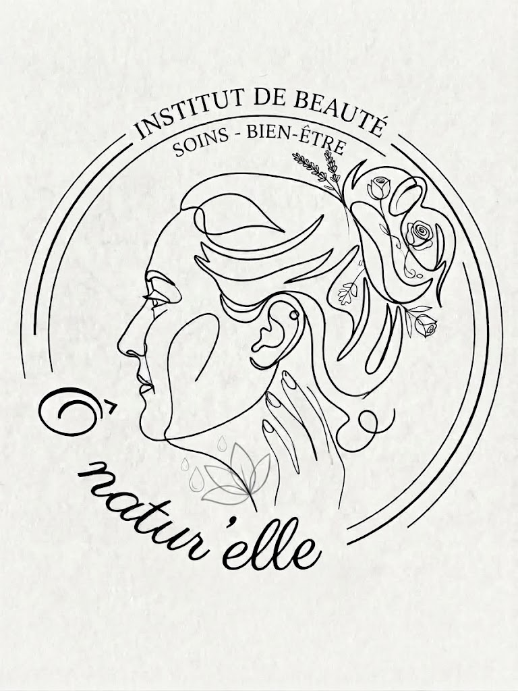

01

Beauty & wellbeing · Figma prototype, mobile & desktop
Ô Natur'Elle — A complete prototype for a beauty salon
Ô Natur'Elle is a premium beauty salon founded by a qualified beautician. For this real client project, I designed a complete, responsive Figma prototype from start to finish, with one guiding idea: help an undecided client find the right treatment and book it effortlessly — treatment showcase, personalised beauty diagnosis, 3-step booking, shop and gallery.
- Scope: 30+ screens, in mobile and desktop versions
- Key feature: a 4-question diagnosis that recommends the right treatment
- Flow: 3-step booking with an animated confirmation